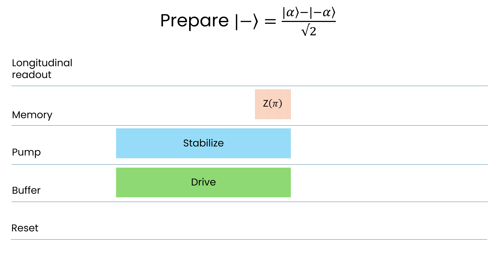
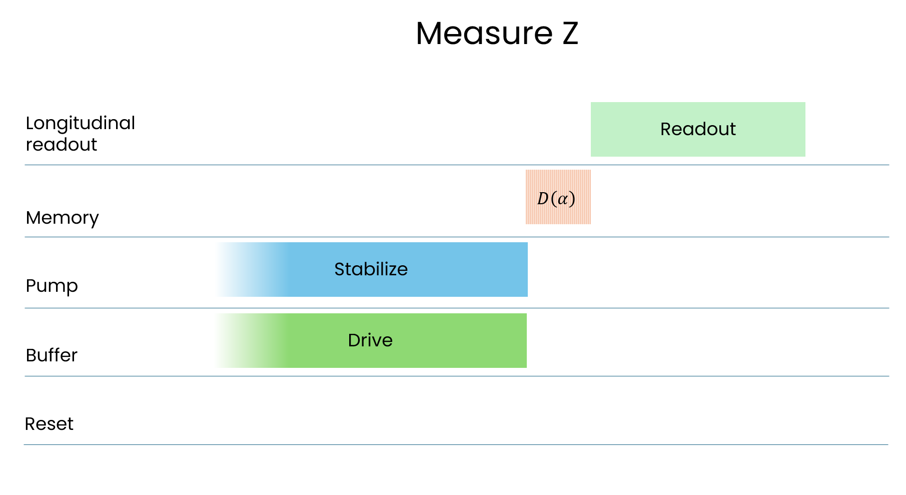
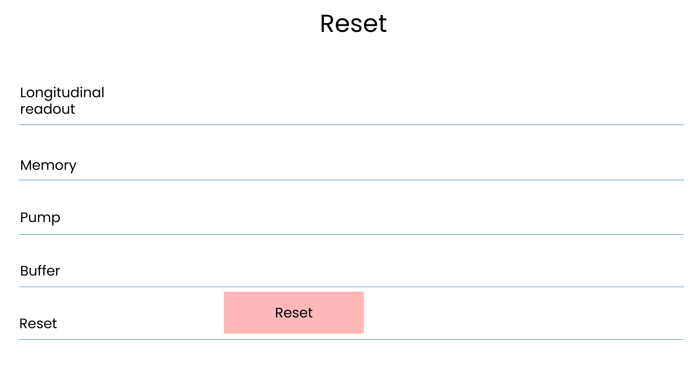

Boson 4 chips
The Boson 4 design
Boson 4 is part of the “Boson” series of chip designs, meant to demonstrate promising ways of implementing cat qubits.

Just like its two predecessors, Boson 4 is a transmon-free design. This enables it to reach very long bit-flip lifetimes (up to 430 seconds).
As its name suggests, Boson 4 follows three previous designs:
- Boson 1 (arXiv link) is the design which started Alice & Bob. It demonstrated the possibility to exponentially suppress bit-flips, while only linearly increasing phase-flips. Its bit-flip lifetime however saturated at 1 ms, due to the presence of a transmon in the experimental setup.
- Boson 2 showed it is possible to take bit-flip lifetime up to 100 seconds by removing the transmon from the setup. This design however lacked the possibility to measure phase-flips.
- Boson 3 (arXiv link) improved upon Boson 2 by introducing a new readout protocol making it possible to do transmon-free measurements along the X and the Z axis. Its bit-flip lifetime reached over 10 seconds.
Boson 4 uses the same readout protocols as Boson 3, but manages to reach longer bit-flip lifetimes than any of its predecessors.
A Boson 4 chip features two independent cat qubits, which are not coupled with one another.
We are currently working on a paper giving a more detailed description of the Boson 4 design.
Available Boson 4 backends
You may run circuits on a Boson 4 chip using one of the three Boson 4 backends (Felis Cloud subscription required).
Main performance figures
The figures below can all be reproduced using this notebook
üí° Note: The figures below were measured on Boson 4A. While Boson 4B and 4C feature similar performance, slight differences may exist.
Lifetime
These figures represent the qubit's bit-flip and phase-flip lifetime.
When preparing the \(\ket{0}\) state, the probability of the Pauli operator Z yielding 0 after a delay of duration \(t\) decays as \(\exp(-t/T_{Z})\), where \(T_{Z}\) is the bit-flip lifetime.
When preparing the \(\ket{+}\) state, the probability of the Pauli operator X yielding +1 after a delay of duration \(t\) decays as \(\exp(-t/T_{X})\), where \(T_{X}\) is the phase-flip lifetime.
| average_nb_photons = 4 | average_nb_photons = 11 | |
|---|---|---|
| Bit-flip | \(830 µs\) | \(120 s\) |
| Phase-flip | \(0.95 µs\) | \(0.3 µs\) |
üí° Note: Measuring lifetimes over 100 seconds is challenging using repeated measurements and a chip shared between users:
- Doing 1000 shots of a 100-second experiment takes almost 28 hours
- Doing shorter experiments yields too few errors; this requires using more shots and does not make experiments significantly shorter
We are working on adding the “real-time trajectories” protocol described in our latest Nature paper (arXiv link), which enables shorter measurements.
üí° Note: if you're used to working with transmons, you know that state decay only happens if you start from the \(\ket{1}\) state. With cat qubits, the \(\ket{0}\) and \(\ket{1}\) states are virtually interchangeable. Experimental differences might remain, but they're mostly due to sampling noise, calibration inaccuracies or readout.
SPAM errors
These figures represent sequence error (# shots giving the wrong result / # of shots).
| Sequence | average_nb_photons = 4 | average_nb_photons = 11 |
|---|---|---|
| \(P_0\) - \(M_Z\) | \(1.7\%\) | \(7.6\times 10^{-6}\) |
| \(P_+\) - \(M_X\) | \(40 \%\) | \(47 \%\) |
üí° Note: If you run your own experiments, you will notice that \(P_1\) - \(M_Z\) does not give the same results as \(P_0\) - \(M_Z\). This is because while our state preparation is symmetrical, our readout protocol is not.
Z gate performance
These figures represent the probability of getting a bit-flip or phase-flip during a Z-gate.
| average_nb_photons = 4 | average_nb_photons = 11 | |
|---|---|---|
| Bit-flip | \(5.0 \times 10^{-4}\) | \(5.8 \times 10^{-8}\) |
| Phase-flip | \(22 \%\) | \(27 \%\) |
üí° Note: As you'll notice, while this chip's bit-flip performance is stellar, the phase-flip performance is still somewhat underwhelming.
A few things to keep in mind when reading these results:
- The readout protocol has not been optimized and can still be further improved.
- Better performance has already been achieved with different designs. For example, the AutoCat design features a 3.5 % error rate for the Z gate.
- Cat qubit architectures are less demanding regarding qubit quality (a repetition code has a higher threshold than a surface code).
Overall, phase-flip performance still needs to improve by 1 to 2 orders of magnitude for error correction to work reliably. More precisely:
- According to this paper, the \(\kappa_2/\kappa_{1_{eff}}\) ratio must be improved to a few hundreds to reach the repetition code's threshold.
- According to the figures in the table below, Boson 4's ratio is 12.5.
We are focused on improving these figures, with several promising solutions being tested in our lab. Stay tuned!
Or, if you think this is an interesting research topic, don't hesitate to drop us a line, we are happy to explore potential collaborations.
Chip parameters
These parameters were measured in Alice & Bob’s lab and cannot be reproduced using Felis.
| Metric | Measured value | Description |
|---|---|---|
| \(f_a\) | 1.079 GHz | Memory resonator frequency |
| \(f_b\) | 7.898 GHz | Buffer resonator frequency |
| \(\kappa_1/2\pi\) | 2.26 kHz | Memory resonator energy relaxation rate / single-photon loss rate |
| \(\kappa_{1_{eff}}/2\pi\) | 19.9 kHz | Effective \(\kappa_1\) experienced by the cat qubit |
| \(\kappa_b/2\pi\) | 22 MHz | Buffer resonator energy relaxation rate / single-photon loss rate |
| \(\kappa_2/2\pi\) | 250 kHz | Engineered memory resonator two-photon dissipation rate |
| \(g_2/2\pi\) | 1.2 MHz | Hamiltonian two-photon exchange rate in between memory and buffer resonators |
| \(K/2\pi\) | -12 kHz | Thermal population of the memory resonator |
| \(\kappa_φ/2\pi\) | < 10 kHz | Memory resonator pure dephasing rate |
| \(n_{th}\) | 2 | Self-Kerr / anharmonicity of the memory resonator |
For more details about what these parameters mean, read our seminal Nature Physics paper (arXiv link).
Gate implementation details
There are three types of gates available:
- "preparation gates" (\(P_0\), \(P_1\), \(P_+\), \(P_-\)), used to initialize the state of the cat on some remarkable spots on the Bloch sphere;
- "one-qubit operations" (\(Z\), \(I\)), used to transform one state into an other one
- "measurement gates" (\(M_X\), \(M_Z\)), used to measure the state of the qubit.

Bloch sphere for cat qubits. The Z basis states is constituted from the stable coherent state, while the X axis basis is constituted from the even and odd cat states.
For cat qubits, the basis states along the Z axis and the X axis are not equivalent. Indeed, the states along Z are stable (long lived) since they are protected by the two-photon dissipation process, while the states along the X axis are not protected: their lifetime is given by the lifetime of the memory under pump.
Therefore, we can regroup the available gates into two families: the Z family associated to the the Z basis (\(P_0\), \(P_1\), \(I\), \(M_Z\)), and the X family associated to the X basis (\(P_+\), \(P_-\), \(Z\), \(I\), \(M_X\)).
Furthermore, each of these gates should be ''bias preserving'', which means that they preserve the high stability of the Z axis. In the following, we present each of these gates according to the Z and X family classification.
initialize('0' or '1')
The preparation of the states \(\left|0\right\rangle\) and \(\left|1\right\rangle\) is done by displacing the memory from the vacuum state to the given locations \(\alpha\) and \(-\alpha\) respectively in phase space. This displacement is achieved by driving the memory resonantly while the two photon stabilization is turned off, for a given fixed duration and complex amplitude.

Pulse sequence for preparing \(\left|0\right\rangle\) and \(\left|1\right\rangle\) with a resonant drive on the memory.
initialize('+')
Preparing the cat state \(\left|+\right\rangle\) is done by ''inflation from vacuum.'' Starting from an empty memory, we turn on the two photon stabilization and the buffer drive, thereby leading to a stabilized cat state for timescales greater than \(1 /\kappa_2\) : this process is called an ''inflation''. Since the parity of the state is preserved through this process, the stabilized cat state will be the even cat state \(\left|+\right\rangle\).


Pulse sequence for preparing the even cat \(\left|+\right\rangle\), and the corresponding Wigner figure
initialize('-')
Preparing the odd cat state \(\left|-\right\rangle\) is done by applying a gate $Z_{\pi} $ to the even cat state \(\left|+\right\rangle\). 
Pulse sequence for preparing \(\ket{-}\)
measure(0)
Given a state \(\left|\psi\right\rangle = a \left|0\right\rangle + b\left|1\right\rangle = a \left|\alpha\right\rangle + b\left|-\alpha\right\rangle + O\left(e^{-2|\alpha|^2}\right)\), the measurement of Z is done using the ''Cat Longitudinal Readout'' (CaLoR) protocol. It consists in turning off the 2 photon pump, then displacing the resulting state by \(+\alpha\), and finally reading out the number of photons. Read more about it in our latest Nature paper (arXiv link).
The result of the displacement is a state \(\left|\psi'\right\rangle \equiv D(\alpha)\left|\psi\right\rangle = a \left| 2\alpha \right\rangle + b\left|0\right\rangle\). Reading out the number of photons of \(\left|\psi'\right\rangle\) yields the number $4 |\alpha|^2 |a|^2 $, which directly relates to \(\left\langle \psi' |Z| \psi' \right \rangle = |a|^2 - |b|^2 = 2 |a|^2 - 1\) (recall that $|\alpha|^2 $ is a fixed quantity). Note that this measurement is destructive: it does not preserve the state, so the cat is dead after this readout!

Pulse sequence for the \(M_Z\) measurement gate
measure_x(0)
Parity measurement is done by mapping the parity basis to the logical basis via a $Y_{\frac{\pi}{2}} = X_{\frac{\pi}{2}} Z_{\frac{\pi}{2}} $ gate \(\{\left|+\right\rangle, \left|-\right\rangle\} \rightarrow \{\left|0\right\rangle, \left|1\right\rangle\}\) . In practice this is realized through the ''Holonomic sequence'' which consists of a $Z_{\frac{\pi}{2}} $gate followed by a deflate and orthogonal inflate. Read more about this sequence in our latest Nature paper (arXiv link).


Pulse sequence and Wigner figures for the \(M_X\) measurement gate
z(0)
The Zeno gate allows to change the phase \(\phi\) of the logical states superposition \(\frac{\left|0\right\rangle + e^{i\phi} \left|1\right\rangle}{2}\), and thus for example change the parity of a cat state, since \(Z_{\pi} \left|+\right\rangle = \left|-\right\rangle\). Zeno gate is realized by driving the memory resonantly with a phase orthogonal to the stabilization axis, while stabilizing the memory. The resonant memory drive causes the fringes to roll with a frequency \(\Omega_z= 4\alpha\epsilon_z\) proportional to the cat size \(\alpha\) and the Zeno drive amplitude \(\epsilon_z\).


Pulse sequence and Wigner figure for Zeno pulse while stabilizing cat qubits
reset(0)
Resetting the memory is done by activating a so called SWAP interaction with the buffer \(H_{\rm SWAP} = g_1 a^\dagger b + g_1^*a^\dagger b\). Since the buffer is cold and relaxes quickly to the environment, the memory will be endowed with a strong 1 photon loss mechanism, leading it to empty to the vacuum state.

Reset pulse sequence : it consists in a single pump tone applied for a given duration